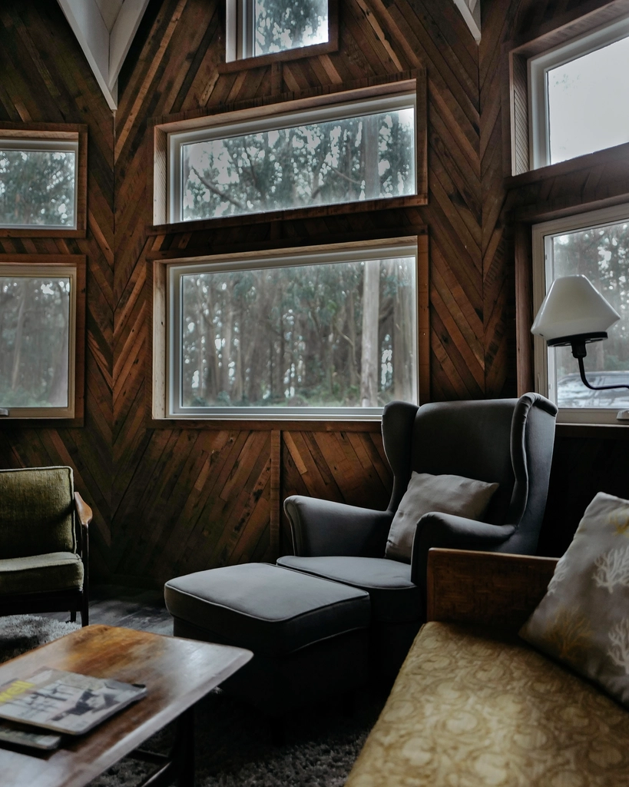
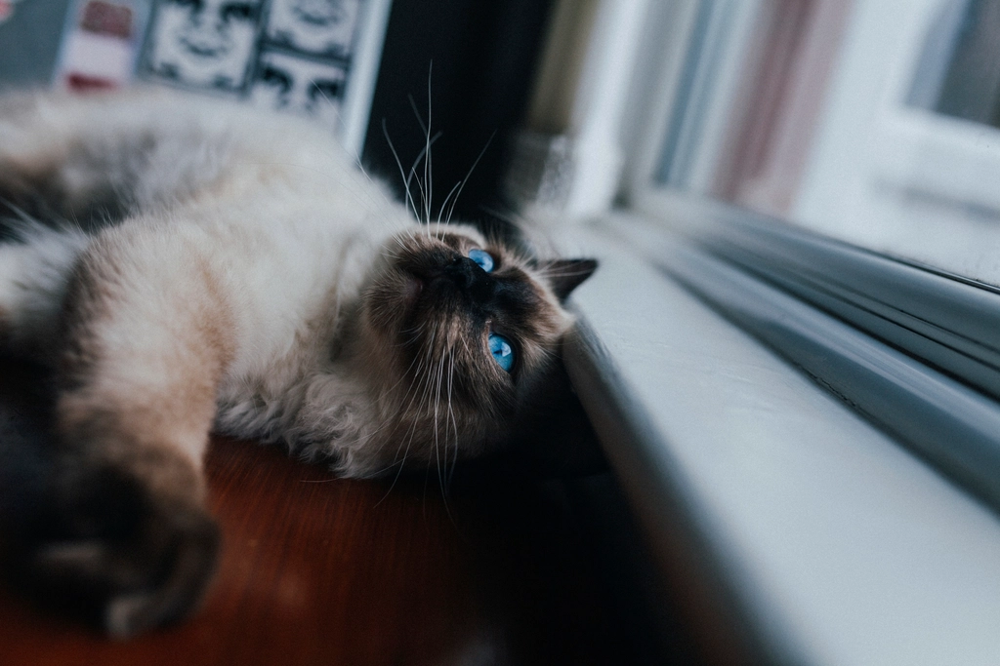
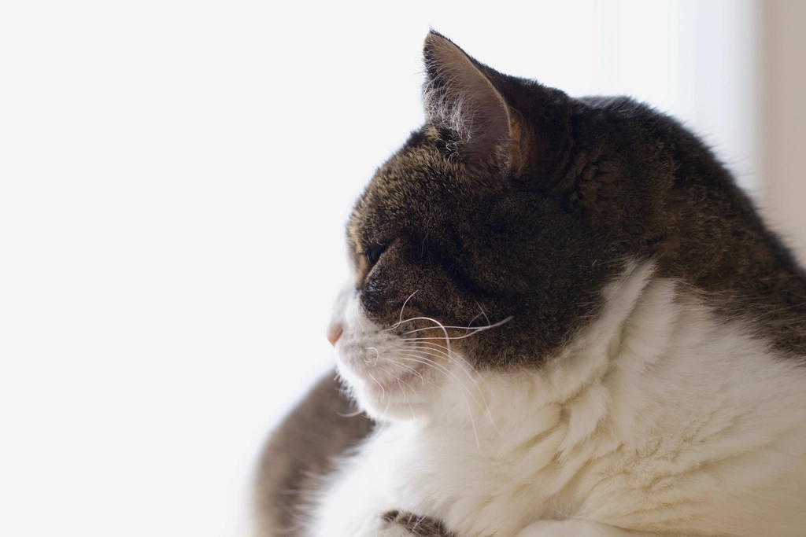
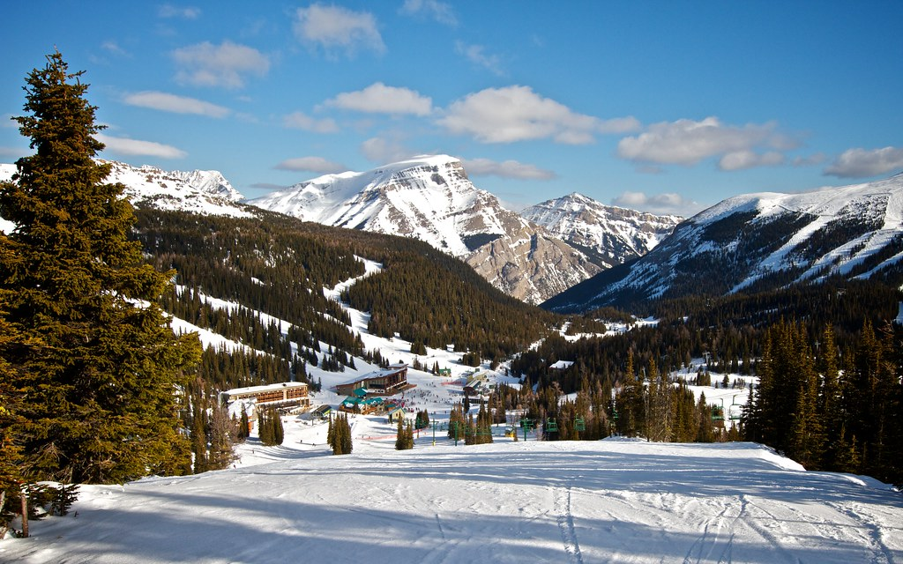

森の中の、手づくりカウンターカルチャー

湯沢・苗場の森で育まれた空間
湯沢町三俣、ブナ林に囲まれたこの場所に gaia はあります。フジロック・フェスティバルの会場や苗場スキー場にも近く、音楽を楽しんだあとの方も、雪のゲレンデを楽しんだあとの方も、この森の空気に惹かれて訪れます。店内にあるのは、どこか肩肘の張らない、手づくりのカウンターカルチャーな空気。決まったルールより、その場にいる人の心地よさを大事にしてきた空間です。
肩の力を抜けるテラス席
「肩の力を抜きリラックスできます」「テラス席がとっても素敵でした」と、ご来店者様からもお声をいただいているテラス席。木々の揺れる音を聞きながら過ごす時間は、フェスやゲレンデで動き続けた一日の終わりにちょうどいい休符になります。


お店のアイドル、看板猫
店内をゆったり歩き回る看板猫も、gaiaの名物のひとつ。「猫もかわいい」とご来店者様にも好評で、ふらりと近くの席に現れることもあります。森のカフェならではの、のんびりとした時間の共演者です。
※掲載の猫の写真はフリー素材のイメージです。実際の看板猫の写真は貴店ご提供のものに差し替えます。
フェス帰り、スキー帰りのひと休みに
フジロック・フェスティバル開催時には、音楽を楽しんだあとに立ち寄るご来店者様も多くいらっしゃいます。「フジロックの際に利用させていただきました。とってもリラックスできるし料理も美味しく最高です」というお声や、風呂上がりに2日連続で訪れたというエピソードもいただきました。苗場スキー場にも近い立地のため、雪のシーズンのひと休みにもどうぞ。会場からの具体的な距離・所要時間は、確定した情報をあらためて掲載いたします。
